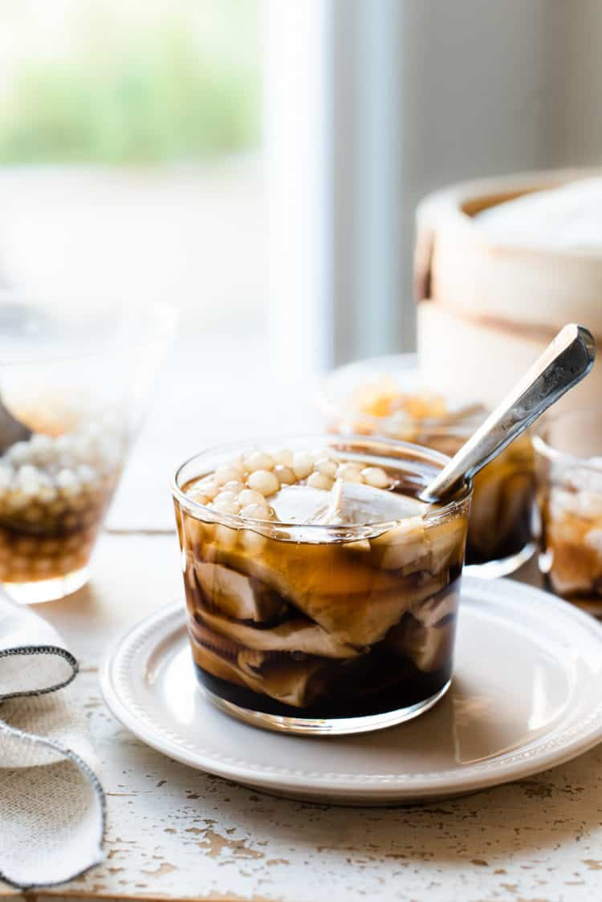

Taho

Silken Tofu
Taho is a classic sweet snack in the Philippines made with silken tofu, sago or tapioca
pearls and a simple brown sugar syrup. Served warm, it's popular as a comforting
breakfast or merienda(snack) any time of the day.
Ingredients
- 16 oz silken tofu
- 1 1/4 cups brown sugar
- 1 cup water
- 1 teaspoon vanilla
- 1 cup tapioca or sago pearls
Directions
- bring a large pot of water to a boil. Cook the tapioca pearls according to package instructions.
This can be don in advance; just be sure to store the the prepped pearls with some water or a little
brown sugar syrup.
- Combine the brown sugar, water, and vanilla in a small saucepan and place over medium-high heat.
Bring to a boil, stir to dissolve the sugar, and lower heat to a simmer. Continue simmering for
about 2-4 minutes and remove from heat. This syrup, or arnibal, can also be made in advance.
- Place silken tofu in a parchment lined steamer. Steam for 10-15 minutes, or until heated.
Alternatively, you can microwave the tofu for about 2-5 minutes.
- To Served, scoop slices of warm silken tofu into a small cup. To top with tapioca or
sago pearls. Pour hot brown sugar syrup(arnibal)on top. Serve immediately while warm.